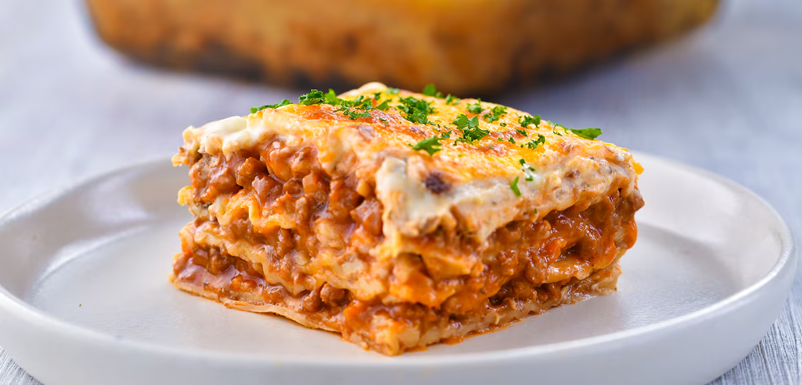

Description
Lasagna is a classic Italian dish made by layering pasta sheets with a
rich meat sauce, creamy ricotta cheese, and melted mozzarella, all baked
to perfection. It is a comforting and hearty meal, perfect for family
gatherings or special occasions.
Ingredients
For the Meat Sause
- 2 tablespoons olive oil
- 1 small onion, chpped
- 2 cloves garlic, minced
- 500g ground beef or ground pork
- 1 can crushed tomatoes
- 2 taablespoons tomato paste
- 1/2 teaspoon black pepper
- 1 teaspoon salt
For the Cheese Mixture:
- 1 cup ricotta cheese
- 1 cup grated Paremsan cheese
- 1 egg
- 1/2 teaspon salt
- 1/2 teaspoon black pepper
Steps
-
Prepare the Meat Sauce – Heat olive oil in a pan
over medium heat. Sauté chopped onions and garlic until fragrant, then
add ground beef or pork and cook until browned. Stir in crushed
tomatoes, tomato paste, oregano, basil, salt, pepper, and sugar
(optional). Let it simmer for 15–20 minutes.
-
Make the Cheese Mixture – In a bowl, mix ricotta
cheese, Parmesan cheese, an egg, salt, and pepper until well combined.
-
Preheat the Oven– Set the oven to 180°C (350°F) to
ensure it's ready for baking.
-
Assemble the Lasagna – In a baking dish, spread a
thin layer of meat sauce at the bottom. Place a layer of lasagna
sheets, followed by a layer of cheese mixture, then more meat sauce.
Repeat these layers until all ingredients are used, ending with meat
sauce on top.
-
Cheese and Bake – Sprinkle shredded mozzarella
cheese over the top. Cover the dish with aluminum foil and bake for 25
minutes.
-
Finish Baking – Remove the foil and bake for another
15 minutes until the cheese is golden and bubbly.
-
Let it Rest and Serve – Allow the lasagna to rest
for 10 minutes before slicing. Enjoy your delicious homemade lasagna!
😊